She Thrives: A new path to recovery & wellness for women and their children
The above two minute video is part of a ten minute documentary OpenDoors produced which is available for screenings. You can also watch a video podcast about She Thrives and the GLP-1 pilot from the ‘Fighting Crime’ podcast by Arnold Ventures.
The OpenDoors She Thrives program is a new, integrated women’s reentry and family reunification initiative. As part of this project, OpenDoors operates two transitional women’s houses, the Foundations House and the Women and Children’s House. Each program provides a host of supportive services to justice-involved women as they work towards wellness and recovery. Over the past two years, we have helped over 120 women in this program. In collaboration with CASPR and Quel Health, women in She Thrives can now access GLP-1 medication for addiction treatment, providing another critical tool to help them in their journey and initial evaluation results indicate that women in the program report reduced cravings and increased well-being.
Too often, women struggling with addiction and mental health issues are arrested and incarcerated instead of provided with the treatment they need. The majority of women in the Rhode Island prison are themselves victims of violence, and they are also mothers striving to take care of their children. Instead of a punishment only system, the She Thrives program works with the courts and prison system to provide women facing prison time to be diverted into our program.
“I’ve gotten stronger in my recovery—I used to have a pit in my stomach when I thought about drugs. I had drug dreams. Those are gone.”
— Jessica, She Thrives Program Graduate
Press Coverage of She Thrives

PBS NewsHour: The evidence suggesting GLP-1s can curb drug and alcohol cravings
Watch Here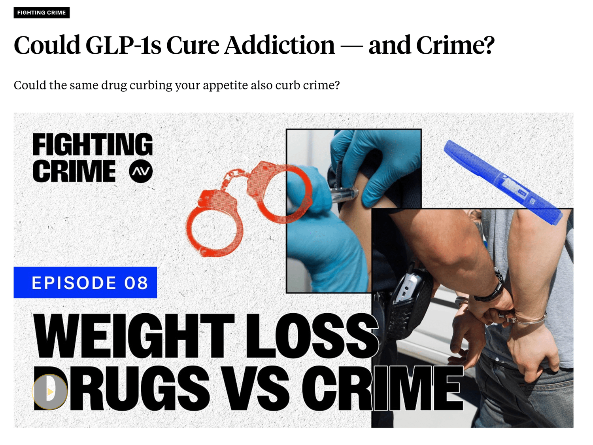
Fighting Crime Podcast: Could GLP-1s cure addiction - and crime?
Watch Here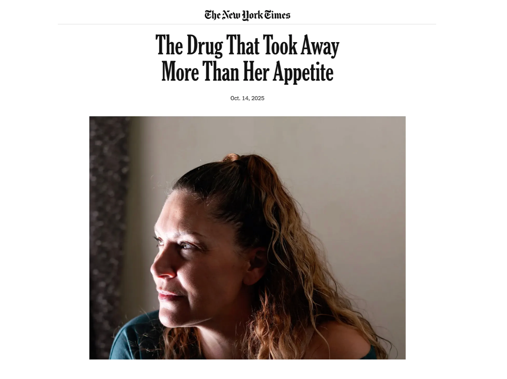
The New York Times: The Drug That Took Away More Than Her Appetite
Read More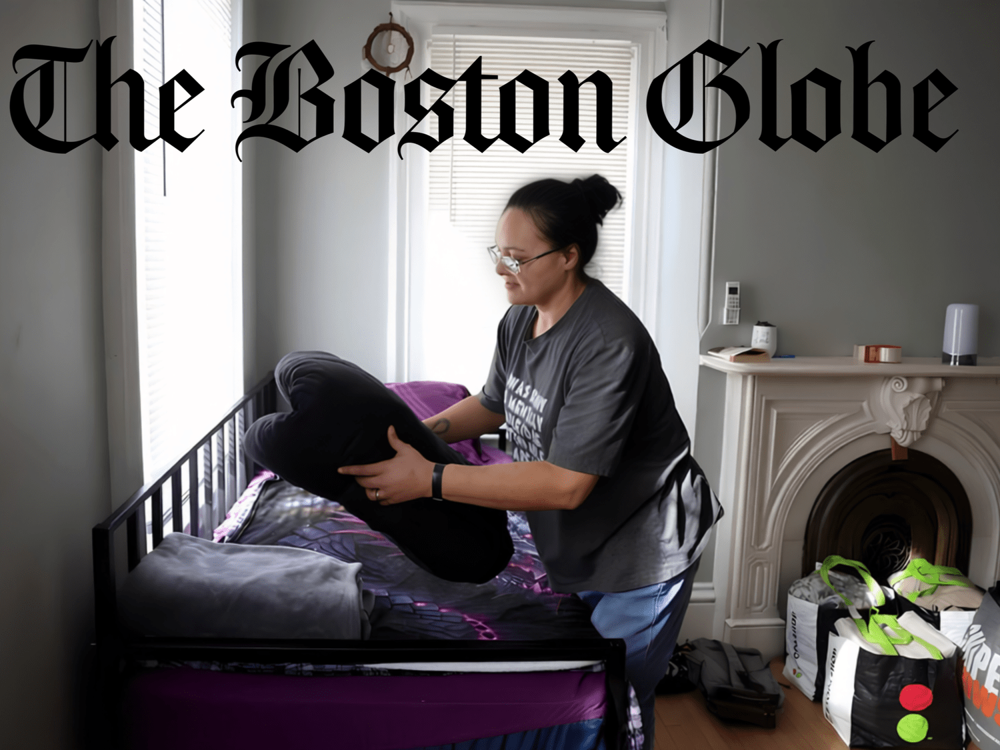
The Boston Globe: ‘I Feel reborn’: A Providence program is using GLP-1 drugs to free people from addiction
Read More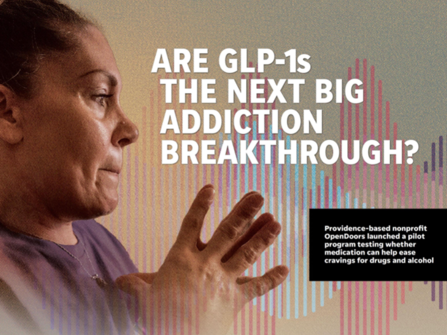
The Providence Journal: Are GLP-1’s the Next Big Addiction Breakthrough?
Read More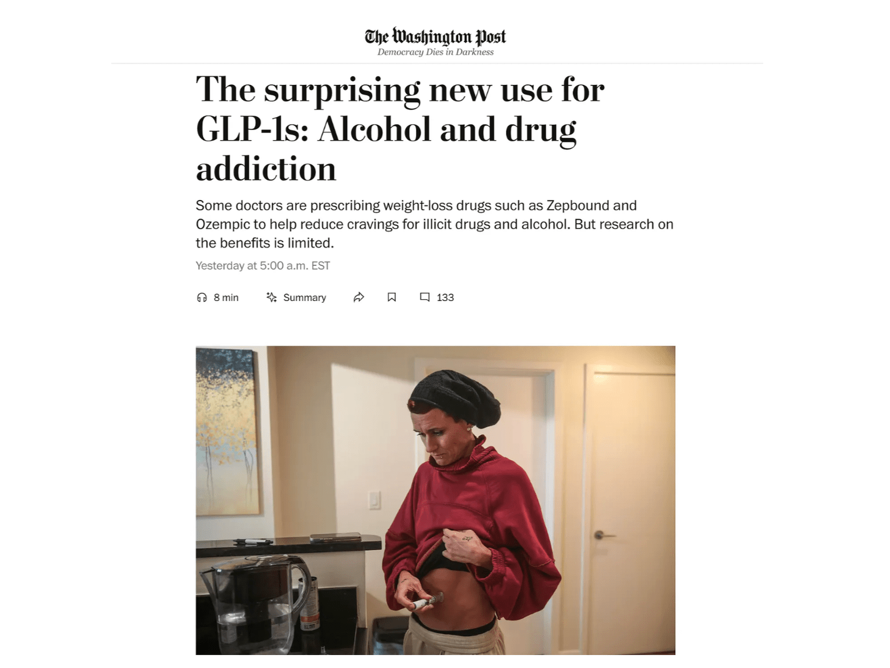
The Washington Post: The surprising new use for GLP-1s: Alcohol and drug addiction
Read More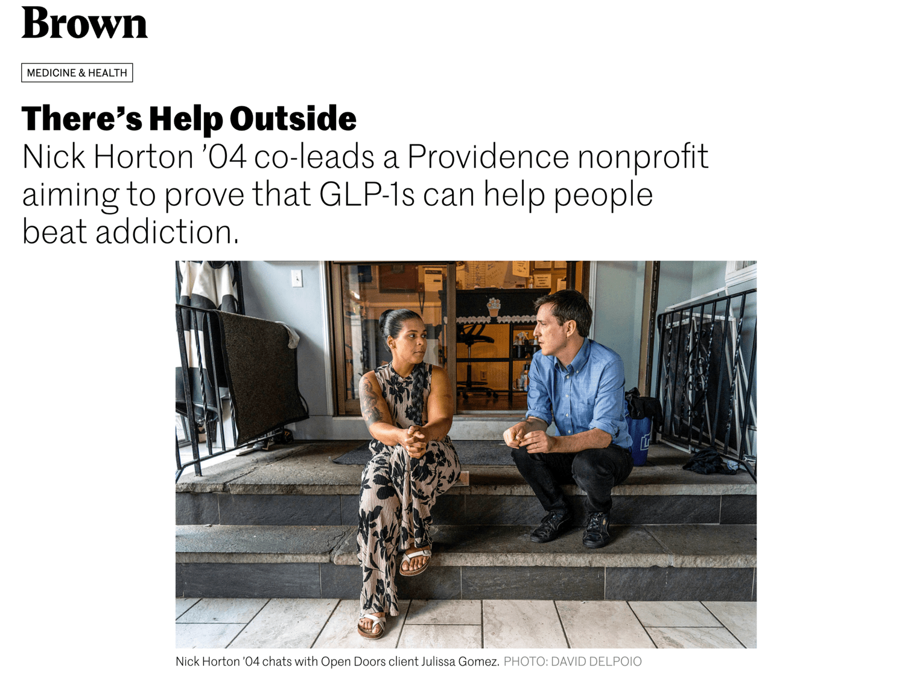
Brown Alumni Magazine: There’s Help Outside
Read More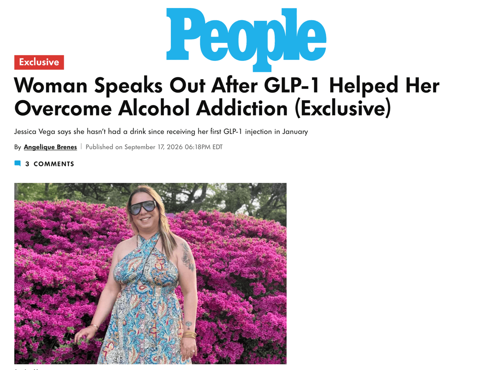
People: Woman Speaks Out After GLP-1 Helped Her Overcome Alcohol Addiction
Read More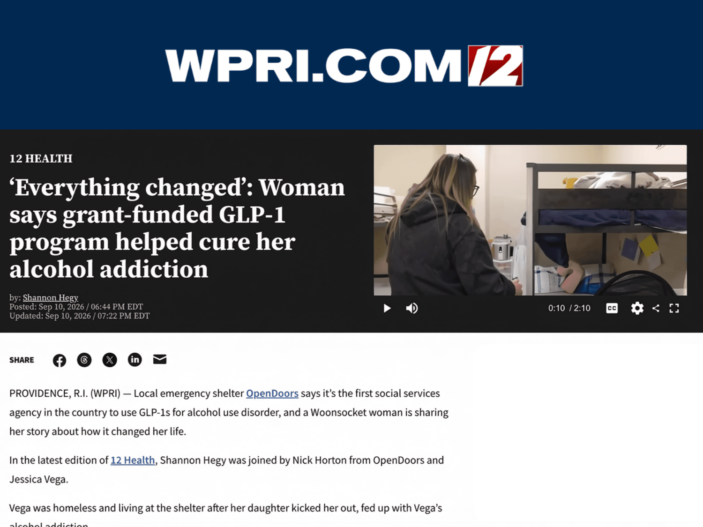
WPRI 12: ‘Everything changed’: Woman says grant-funded GLP-1 program helped cure her alcohol addiction
Read More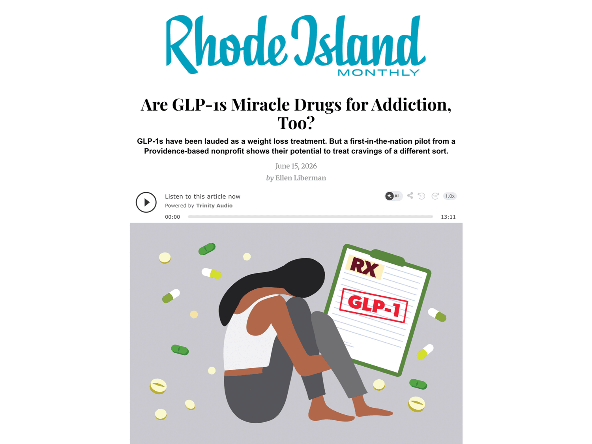
Rhode Island Monthly: Are GLP-1s Miracle Drugs for Addiction Too?
Read More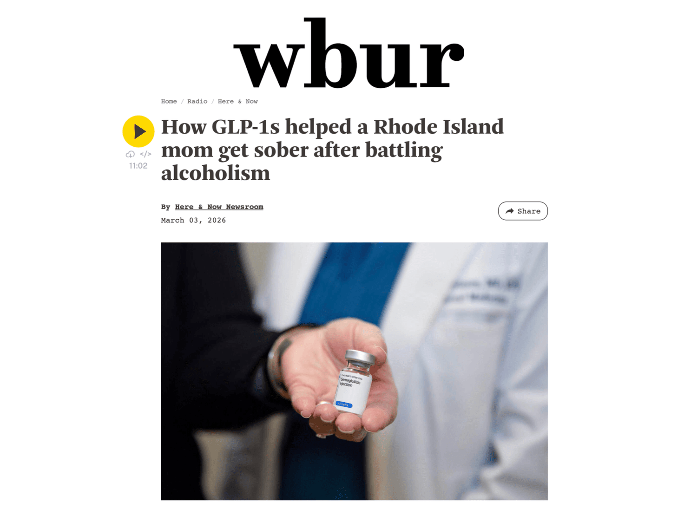
wbur: How GLP-1s helped a Rhode Island mom get sober after battling alcoholism
Read More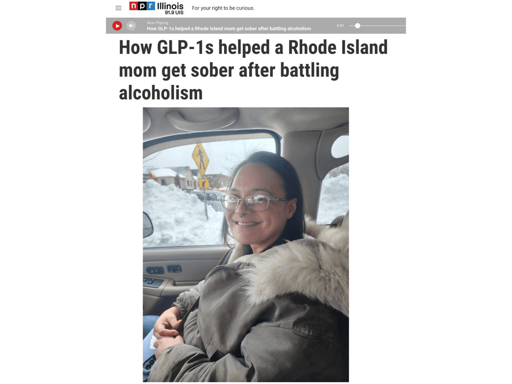
NPR: How GLP-1s helped a Rhode Island mom get sober after battling alcoholism
Listen Here
Proving that we can save families and reduce incarceration when we invest in people, not prison.
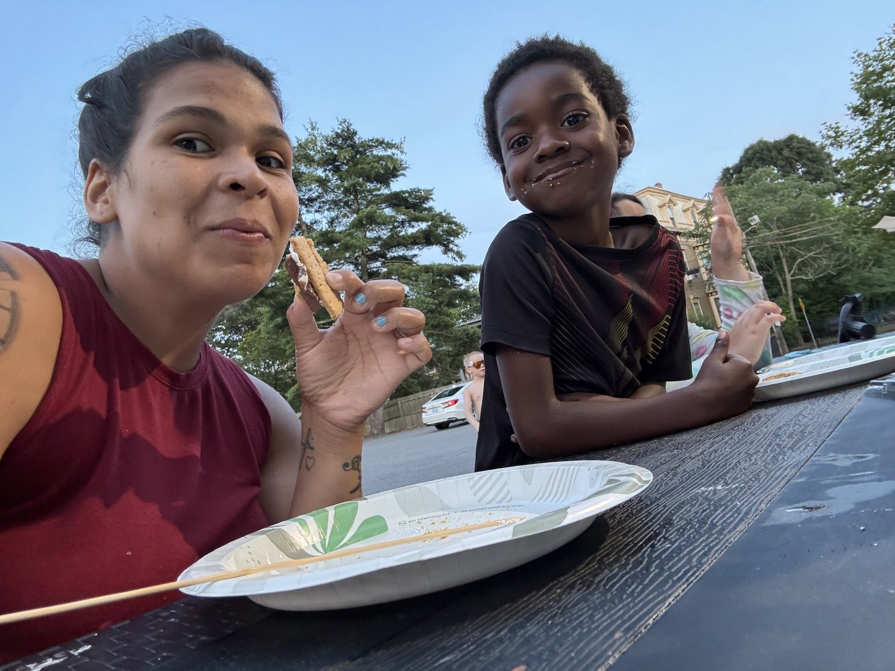
Starting soon, this project will be integrated into a recent grant from the Department of Justice’s Second Chance Act with the goal of providing our services to 300 women over three years.
As part of this project, we will be running a randomized controlled trial to measure the impact of re-entry services on recidivism. This will allow us to rigorously prove that we can end the cycle of addiction and incarceration by investing in people, not prisons (Read more about our justice reinvestment policy campaign to reduce the size of the women’s prison here).
In order to fully fund this ambitious project, we need your help.